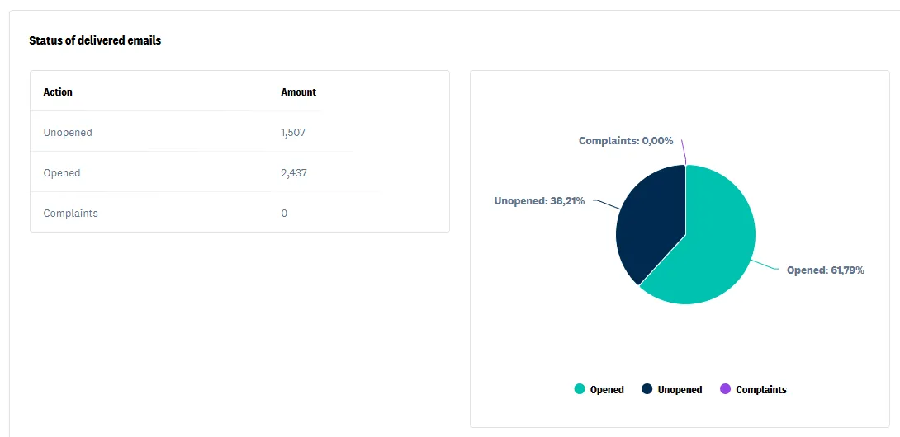

Email that brings past patients back
Most clinics have hundreds of past patients who never got a reason to return. A monthly newsletter and a few simple automations turn that list into steady repeat bookings.
Everything handled for you
- A monthly newsletter written and designed for you
- Reactivation emails for patients who haven’t visited in months
- Welcome and post-assessment follow-ups
- Review requests after good visits
- List cleanup and grouping by service
- Open, click and booking reporting

Sound familiar?
- You’ve never emailed your patient list
- Your schedule has gaps while your database is full
- Patients drop off after two or three visits
- You send emails but don’t know if anyone books
What happens, and when
Clean and connect
We tidy your list, set up templates and connect booking links.
Newsletter
Seasonal tips, new services and team news, sent around mid-month.
Automations
Reactivation and follow-up emails that run in the background.
Email marketing questions
Don't see yours? Bring it to your discovery call and you'll get a straight answer.
How often should a clinic email patients?
Once a month is a good rhythm for a newsletter. Automated follow-ups and reactivation emails run on their own schedule.
What goes in a clinic newsletter?
Short, useful content: a seasonal tip, a new service or practitioner, a reminder about unused benefits, and a clear way to book.
Can you use our current email platform?
Usually, yes. If you don’t have one, we’ll set one up that connects to your booking system.
Your competitors are marketing right now. Are you?
Every week without a system is a week the clinic down the street books the patients who should be booking with you. Start with a 30-minute discovery call.